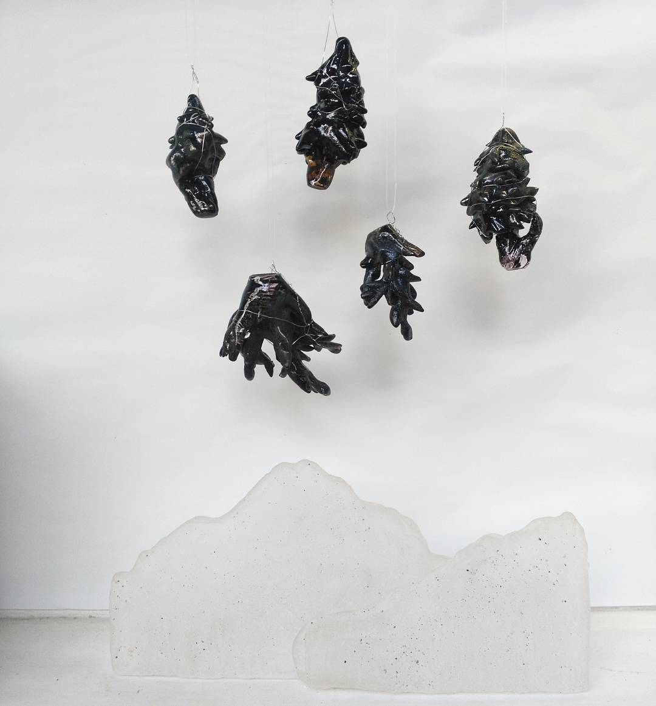
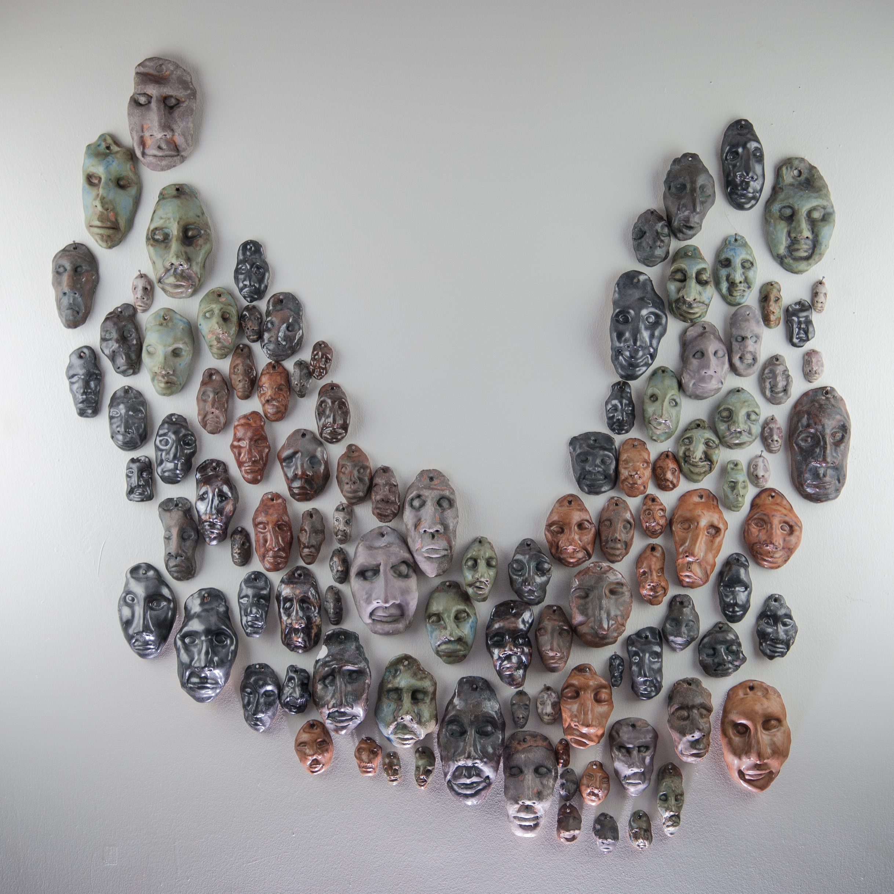
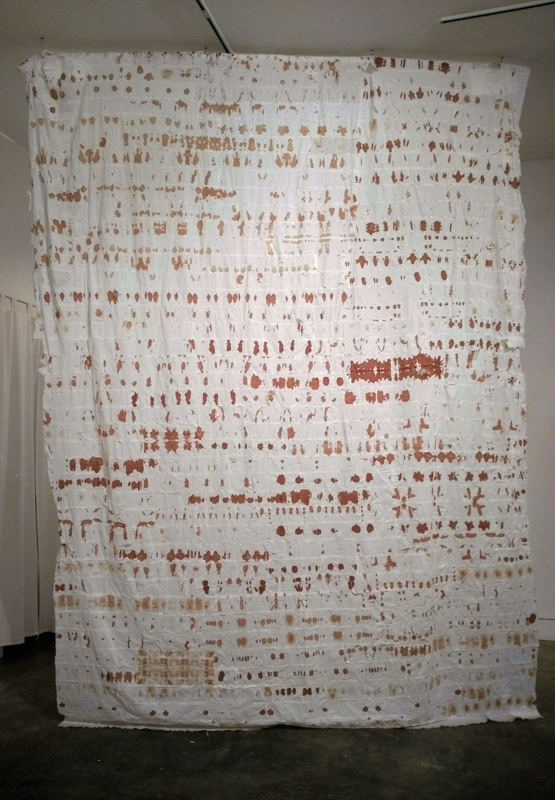
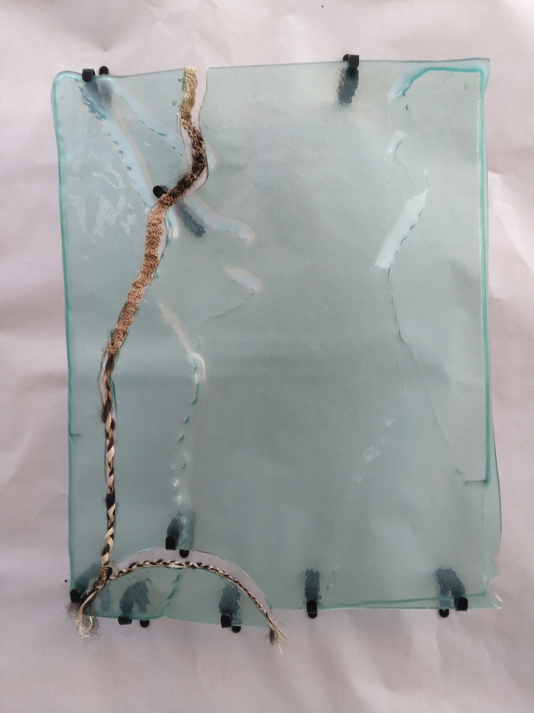
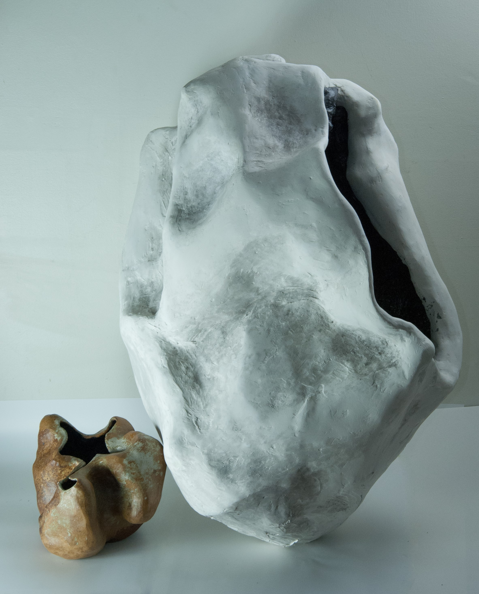
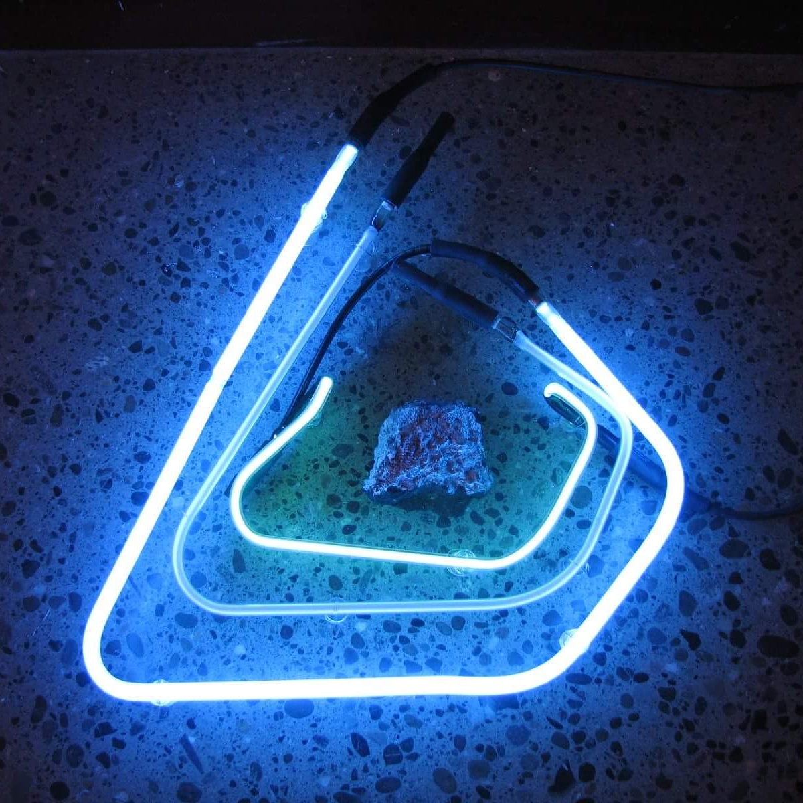
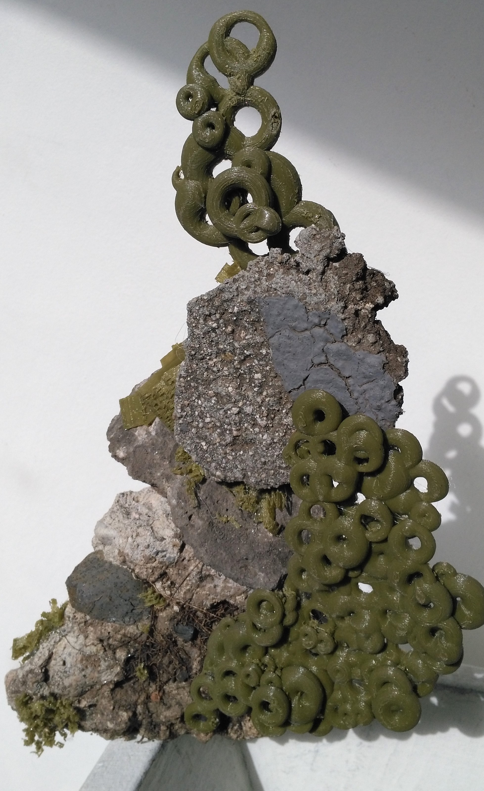
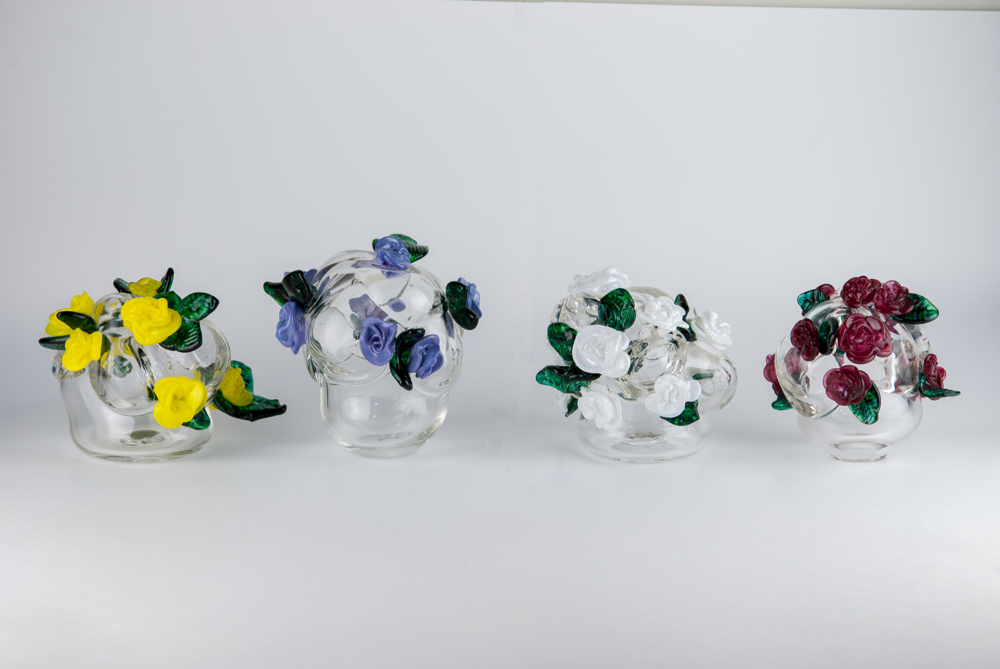
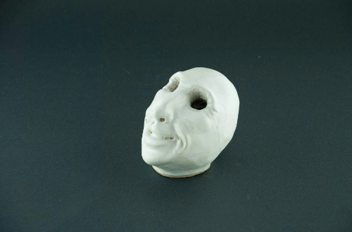

I lay (my)self to rest
earth body work
2018

And So We Burn
Mixed Media: sheet glass, ceramics, wood
5.00 X 1.20 X 0.63 F
2017

Sierra Nevada Mountains / Santa Monica Mountains
Mixed Media: soil on glass
5.70 X 1.00 X 0.00 F
2017

Yosemite, burned roots and invisible mountains
Mixed Media: hot sculpted glass and cast glass
1.75 X 2.75 X 1.00 F
2017

Sonder in Los Angeles
Ceramics
2.75 X 3.00 X 0.17 F
2017

Womanhood - Collaboration: Izzy De La Meme and Ago Visconti
Menstrual Blood on Toilet Paper
7.00 X 9.00 X 0.00 F
2017

Self Portrait - Collaboration with my Vavó, Neuza Machado
Mixed Media: crocheted fibers, hair, slumped glass
1.83 X 2.25 X 0.08 F
2017

Tipping Point Post Paris Accord
Mixed Media: eggshells, Los Angeles asphalt, twine
0.96 X 2.75 X 0.96 F
2017

Mother Sound and Father Deep, a tool a guide
Mixed Media
2.50 X 2.91 X 1.41 F
2017

Unconscious
Mixed Media: neon and UCLA asphalt
1.66 X 0.33 X 1.58 F
2017

Unconscious II
Mixed Media: cinder block from Stanwood, WA and LED lights
.67 X 0.67 X .67 F
2017

Unconscious III
Mixed Media: PLA filament and Los Angeles asphalt
1 X .5 X .33 F
2017

Flower Bubble Baby Series
Blown glass
2018

It'll grow back?
Mixed media stop motion clip
2018
Speaking to the relationship with our material selves and the process of dying. By utilizing materials such as human hair while juxtaposing an eyeless smiling sculpture, there elicits humor and perturbation. Within that uncomfortable space topics such as death of our organic bodies may be approached in a light hearted and reflective manner.